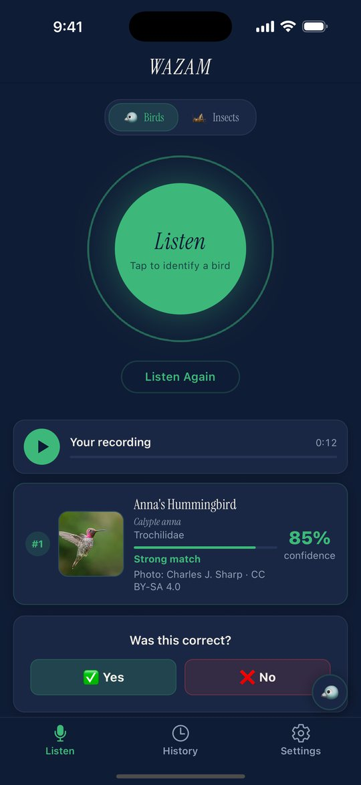

Nature just got
subtitles.
The world is speaking. Now you can follow along.
Hold up your phone and tap Listen. WAZAM suggests which bird or insect you heard, with how sure it is. 6,000+ bird species, 16 insect species, no account required.
Free on TestFlight. On Android? Join the closed test.

- 6,000+Bird species, via BirdNET
- 16Insect species
- 8–15sPer recording
- 0Accounts needed
Point. Listen.
Find out.
WAZAM listens for a few seconds, cleans up the recording, and compares it with thousands of known bird and insect calls.
-
Tap Listen
WAZAM records 12 seconds of sound by default. You can pick 8 or 15 seconds in Settings, extend a recording, or stop early.
-
WAZAM listens closely
Hiss and low wind and traffic rumble are filtered out. BirdNET, the bird sound model from the Cornell Lab of Ornithology and Chemnitz University of Technology, checks the recording in overlapping 3-second slices. Insects use WAZAM's own model.
-
See up to three suggestions
Each one says how sure WAZAM is: a strong match, a possible match or a faint detection. Tap one for photos and a description, then tell us whether it was right.
Made for
the outdoors.
Real recordings are messy: wind, traffic, a bird half a field away. WAZAM is built for that, and it tells you when it isn't sure.
-
Sound is enough
No photo needed. WAZAM works before you even see the bird.
-
Knows where and when
With your permission, WAZAM favours species recorded in your region and what usually calls at that hour. Without it, the app still works.
-
Insects too, free
Switch to Insects for 16 species of crickets, katydids, cicadas and bees. Free for everyone.
-
Private by design
Audio is deleted from our servers right after processing. Your recent recordings stay on your phone. No account, and no data sold.
Birds are just
the beginning.
Birds and insects are live. More of nature's voices are coming, one group at a time.
-
Live
Birds
- 6,000+ species worldwide
- Location and time-of-day aware
- iPhone beta on TestFlight
-
Live
Insects
- 16 species
- Crickets, katydids, cicadas, bees
- Free for everyone
-
Next
Frogs
- Frog and toad calls
- Same Listen button
-
Later
More sounds
- More of nature's voices
- Shaped by beta feedback
Heard something?
Find out what it was.
The beta is free. Try WAZAM on your next walk and tell us what it got right and wrong.
Android
WAZAM is in closed testing on Google Play, so we add each tester by hand. Testers who stay for 14 days help WAZAM open to everyone on Google Play.
- Email us the Google account you use on Play.
- Once we've added you, open WAZAM on Google Play and install it.
Questions? Email support@wazam.ai